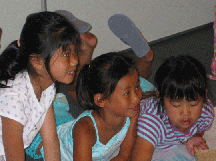

Newsletter

The FCC BC newsletter, "Ni Hao" is mailed to members twice a year in the spring and fall.
The newsletter is dedicated to providing information about what is going on in our community. It discusses what it means to be a transracial adoptive family, and helps profile opportunities to bring Chinese culture into our families. We bring news on what is going on in the adoption community, adoption laws, and in China.
We invite members and non-members to provide articles, information pieces, book reviews, movie reviews or anything you think might be of interest to FCC members. The deadlines for submission to the newsletter are in March and September, on the 15th of the month.
